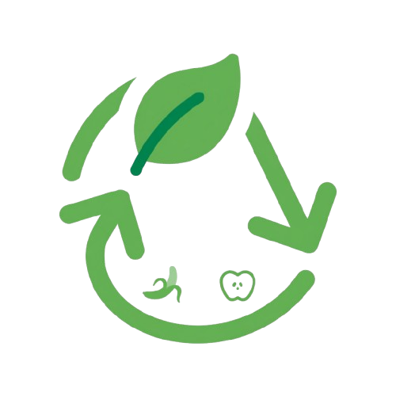
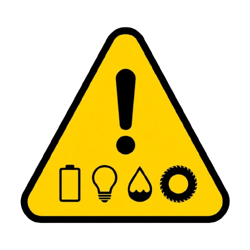
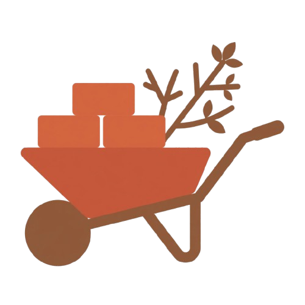

O que você deseja descartar?
Selecione a categoria do seu resíduo para encontrar orientações sobre o descarte correto em Chapecó.

Recicláveis & Orgânicos
Coleta seletiva e restos de comida.
Volumosos & Eletrônicos
Móveis, Bota-Fora e Ecopontos.

Resíduos Tóxicos
Pilhas, lâmpadas, óleo e pneus.

Entulho & Jardinagem
Galhadas, podas e construção.
Não tenho certeza
Encontre informações para identificar seu resíduo.